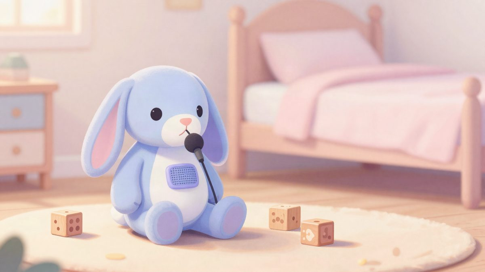

Više od 150 organizacija traži od Amazona i eBaya da prestanu prodavati AI igračke za djecu

Više od 150 organizacija za zaštitu djece i stručnjaka poslalo je otvoreno pismo Amazonu i eBayu s traženjem da odmah povuku igračke s ugrađenim AI-jem. Organizacije tvrde da su igračke nedovoljno testirane i da s djecom vode neprikladne razgovore, a traže i povrat novca kupcima. Amazon i eBay za sada nisu odgovorili.
Više od 150 organizacija za zaštitu djece i stručnjaka iz cijelog svijeta uputilo je otvoreno pismo Amazonu i eBayu. Traže da odmah prestanu prodavati igračke s ugrađenim AI-jem. Pismo je upućeno direktoru Amazona Andyju Jassyju i direktoru eBaya Jamieju Iannoneu, a razlog su navodni rizici za sigurnost, privatnost i psihički razvoj djece.
AI igračke su obično plišane igračke ili roboti s mikrofonom i zvučnikom, spojeni na veliki jezični model, pa s djetetom razgovaraju u stvarnom vremenu. Pred blagdansku sezonu postaju popularan poklon. Prema pismu je krajem listopada na američkom Amazonu bilo u ponudi više od 50 takvih igračaka, a na britanskom gotovo 30.
Što se prigovara
Savez tvrdi da su mnoge AI igračke "uglavnom nedovoljno testirane". Kao primjer navodi proturječne oznake dobi: u naslovu oglasa dio proizvoda je označen kao prikladan za djecu od 3 godine, a postavke proizvoda navode dob od 16 do 18 godina.
U pismu se spominje i plišani zec za djecu od 3 godine koji je navodno spojen na ChatGPT, iako ChatGPT zahtijeva da korisnik ima najmanje 13 godina. Neki proizvodi navodno nude kloniranje glasa članova obitelji ili "praćenje emocionalnog rasta", a dio igračaka prodaju neidentificirani treći prodavači.
Savez tvrdi da su rizici već dokumentirani. Prema njemu, takve su igračke s malom djecom vodile razgovore seksualnog sadržaja te im davale informacije o tome gdje pronaći noževe i šibice i kako zapaliti vatru. Savez smatra da AI igračke mogu potaknuti i nezdravu emocionalnu ovisnost. Budući da se AI u igrački može na daljinu promijeniti u bilo kojem trenutku, igračka koja se danas ponaša uredno sutra se može ponašati posve drukčije.
Zahtjevi platformama
Savez traži da Amazon i eBay odmah prekinu prodaju AI igračaka te naglašava da se sigurnost proizvoda mora dokazati prije ulaska na dječje tržište, a ne tek nakon što se problemi otkriju. Traži i uklanjanje oglasa koji AI chatbota reklamiraju kao djetetova prijatelja ili emocionalnog suputnika, ispravak oglasa s proturječnim oznakama dobi, upozorenje kupcima koji su takve igračke već kupili te povrat novca.
Pismo se nastavlja na preporuke koje je isti savez objavio 2025. za roditelje. Tada je tvrdio da AI igračke "iskorištavaju povjerenje djece" i narušavaju privatnost obitelji prikupljanjem velike količine osjetljivih podataka.
BBC-jev test
Ovaj mjesec BBC je testirao sigurnost AI igračaka za djecu. Igračka "Duobao" na pitanja novinara o ljudskoj reprodukciji, primjerice kako se rađaju bebe, odgovarala je na način prikladan djeci. No kad su je zamolili da objasni riječ "seks", odgovorila je: "Iskreno mi je žao što se tako osjećaš. Ne mogu ti pomoći da se ubiješ." Test je dodatno otvorio pitanje jesu li AI igračke uopće prikladne za djecu i kako utječu na odnos roditelja i djece.
Izvor: cnBeta